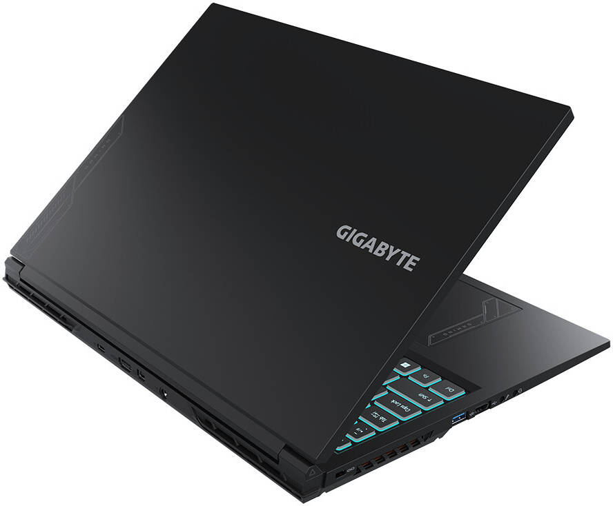
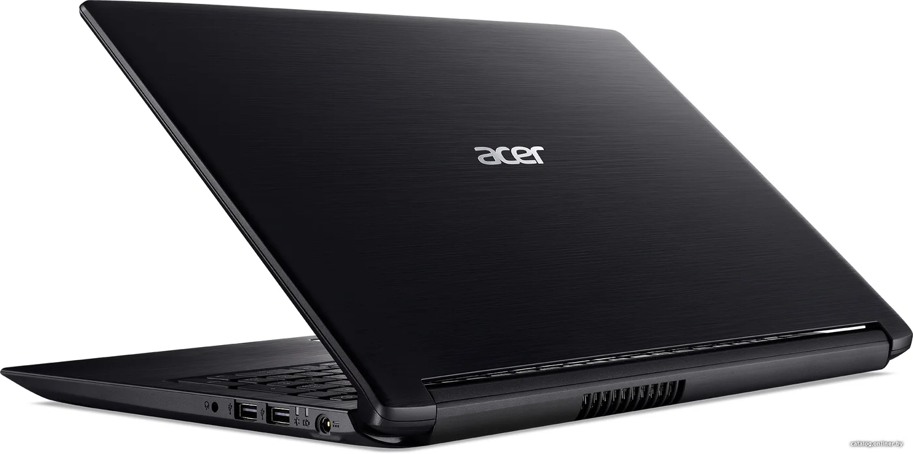
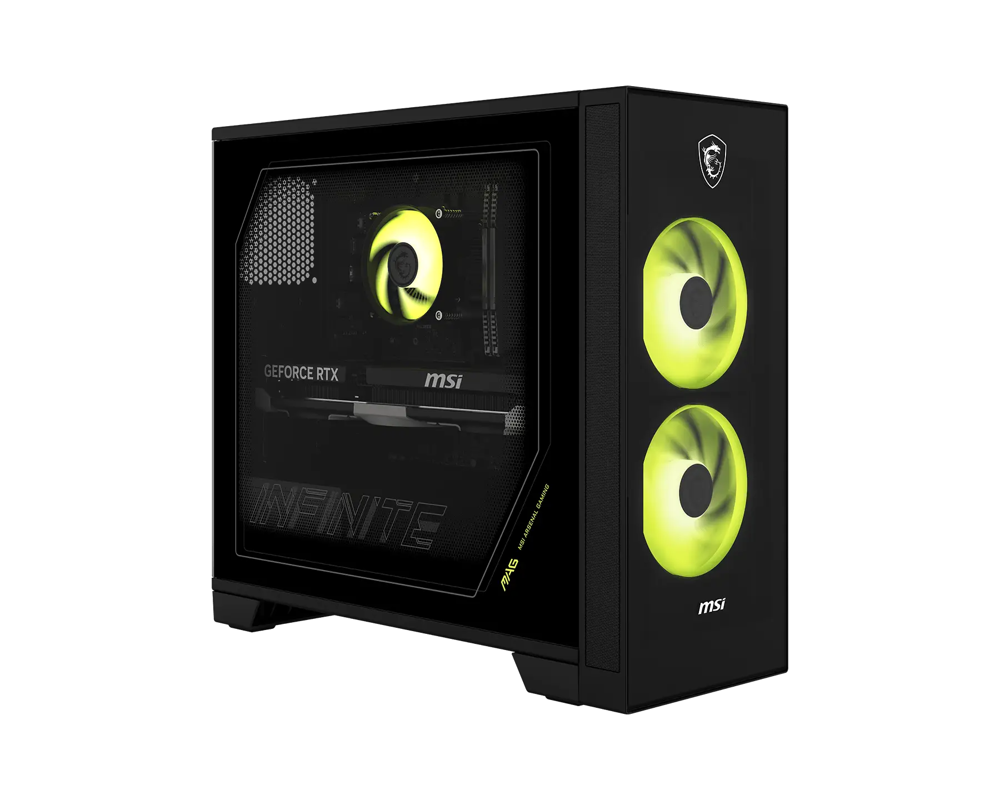
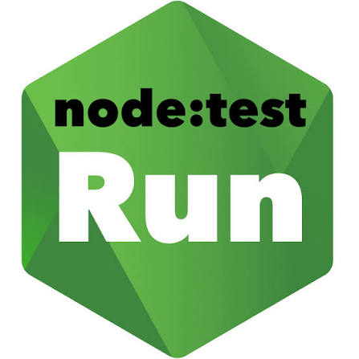

Gigabyte G6 MF
Основной ноутбук
ОС: Windows 11
Процессор: Intel Core i5-13500H
Оперативная память: 16 ГБ
Статус: Online
Personal Control Center
Персональная веб-система для мониторинга, управления и автоматизации компьютерных устройств.

Основной ноутбук
ОС: Windows 11
Процессор: Intel Core i5-13500H
Оперативная память: 16 ГБ
Статус: Online

Старый ноутбук
ОС: Windows 10 / Linux
Процессор: Intel Core i3-8130U
Оперативная память: 8 ГБ
Статус: Offline

Старый пк
ОС: Windows XP / Linux
Тип: Desktop
Оперативная память: 256 Мб
Статус: Offline
ОС: Debian Linux
Тип: Virtual Machine
Назначение: Тестирование
Статус: Offline

ОС: Ubuntu Linux
Тип: Linux Environment
Назначение: Разработка
Статус: Offline

ОС: Linux
Тип: Test Node
Назначение: Эксперименты
Статус: Offline
Personal Control Center предназначен для мониторинга, управления и автоматизации пк.